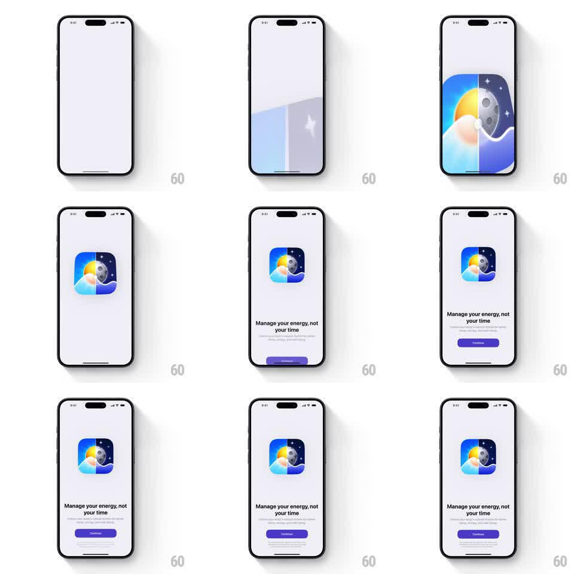

Media
Frame-by-frame

Rebuild this animation 1:1: Peaks' launch sequence - the day-and-night app icon scales down from a full-bleed reveal into its resting size, followed by staggered fades of the headline, subcopy, and a purple Continue button.

Rebuild this animation 1:1: Peaks' launch sequence - the day-and-night app icon scales down from a full-bleed reveal into its resting size, followed by staggered fades of the headline, subcopy, and a purple Continue button. ## Integration Integration: stack-agnostic spec - springs given as stiffness/damping, timed motions as duration + curve; map every value to your framework and animation library of choice. ## Scene Pale lavender screen. The Peaks icon: a rounded square split vertically - sunny mountain slope with a bright sun on the left, starry night with a moon and a white wave line on the right. Below it the headline "Manage your energy, not your time", a line of subcopy, and a purple pill Continue button. ## Motion spec Pattern: icon scale-down reveal with staggered text entrance. - From empty lavender: the icon artwork enters at full-bleed scale (fills the screen, 300ms fade) holding for a beat. - It scales down to its final icon size (spring ~280/20, 600ms) with a slight rotation settle (2deg -> 0), a soft shadow fading in as it lands. - The headline fades and rises (translateY 10pt -> 0, 350ms), the subcopy follows 120ms later, then the Continue button 120ms after that (same motion, plus a fill tint from 90% to 100% opacity). - Idle: the icon's wave line undulates gently (amplitude 3pt, 4s loop) and the sun glows (opacity pulse 0.8 -> 1, 3s). ## Calibration - The full-bleed artwork must be the same artwork as the icon - a scale, not a swap. - Text staggers are short (120ms) and identical in style: rise + fade. ## Reduced motion Icon fades in at final size; texts fade together (300ms). ## Don't miss - The day/night split of the icon stays razor-sharp through the scale. - Nothing else on screen: no status elements, no background texture.